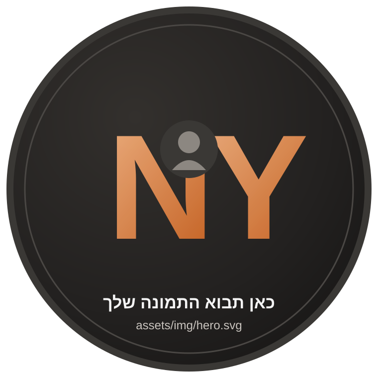
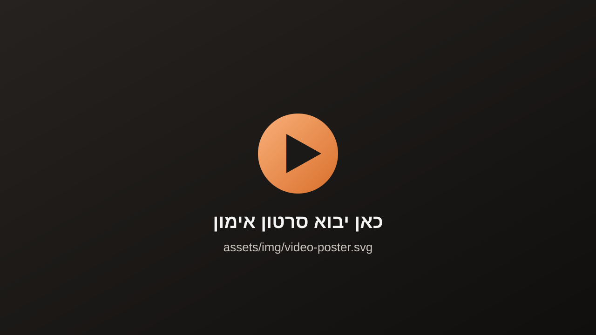
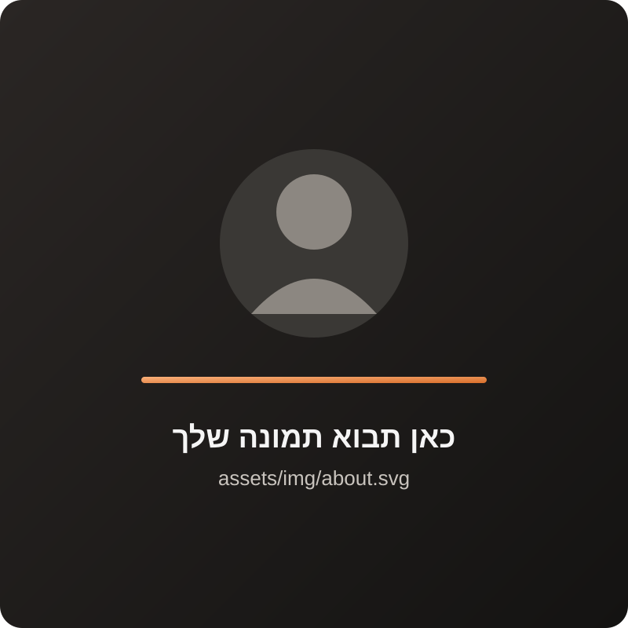

אימוני קליסתניקס בפתח תקווה — קבוצתי או אחד על אחד
(אימוני קבוצה בפתח תקווה, ואופציה לאימונים אחד על אחד עם נריה — בלי צורך בחדכ, בציוד ובלי שעות של אימונים)
יאללה נריה קח אותי לגוף שאני רוצה
הזמן עובר, הגוף כבר לא כמו שהיה, ואתם נותנים את כל כולכם לעבודה ולמשפחה – אבל שוכחים את עצמכם בדרך…
אני כאן כדי להזכיר לכם: גם לכם מגיע להרגיש טוב עם הגוף, שתצליחו לזוז בקלילות ושתרגישו מלאי ביטחון.
אני לא מאמין בשיטות של "הכול או כלום". לא מאמין בדיאטות קיצוניות, באימונים שלא משאירים אוויר, או בגישות שמחזיקות חודש ואז מתפרקות.
מה כן? אני מאמין בלב שלם בלעשות את המקסימום עם המינימום האפשרי – ולבנות הרגלים שאפשר להתמיד בהם לאורך זמן. בין אם באימון קבוצתי עם אנשים שדוחפים אותך קדימה, ובין אם בליווי אישי שמותאם בדיוק לחיים שלך – בלי דרמות, בלי קיצוניות, אבל עם תוצאות שנשארות.
אני לא רק מאמן – אני גם תלמיד. לומד מכל מתאמן ומתאמנת שלי איך להשתפר ולדייק, כדי שבסוף כל מי שמתחיל אצלי יגיע למטרה שלו.
וזו הסיבה שהאימונים אצלי לא מרגישים כמו "עוד שיעור" – אלא כמו ליווי אמיתי שמחזיק אותך גם כשקשה.
שיעורי קליסתניקס קבוצתיים בפתח תקווה, באווירה מטורפת ומותאמים לכל רמה – מהצעד הראשון ועד תרגילים מתקדמים.
אופציה לאימונים אחד על אחד עם נריה בפתח תקווה, עם תוכנית שמותאמת בדיוק למטרות, ליכולות ולזמן שלך.
תוכנית קליסתניקס שבנויה לפי המטרות והיכולות שלך, כדי להוציא מעצמך את המיטב.
מעקב צמוד אחרי ההתקדמות שלך, כדי להבטיח שאתה מתקדם נכון לעבר המטרה.
קבוצת מתאמנים שדוחפת אחד את השני קדימה – הרבה יותר קל להתמיד כשלא עושים את זה לבד.
רואים את לוח האימונים ונרשמים לשיעור בקליק – הכול מרוכז במקום אחד.
אתה תרגיש תחושת שליטה בחיים שלך, תפסיק לחוות דאונים של אנרגיה במהלך היום ומלא כוח להשקיע בעצמך.
תראה שינוי אמיתי בגוף – פחות כאבים, פחות קושי כשאתה תרצה לקום מהמיטה ופחות להתנשף כשתעלה מדרגות.
תקבל מחמאות מהסביבה, ותרגיש גאה בעצמך כמו פעם, עם משפחה שמתגאה בך.
זהו מסע שלא תרצה לחזור ממנו.
(ככה נראה אימון אצלי – קצר, ממוקד ובלי לבזבז זמן)


בגיל 13 ניסיתי לעשות את המתח הראשון שלי – ונפתח בפניי עולם מרתק בשם קליסתניקס.
הוא תפס אותי חזק, ומאז שום ספורט אחר לא באמת ריגש אותי.
עם השנים שירתתי כחובש קרבי, עבדתי בחדר כושר, וראיתי מקרוב את מה שחוזר אצל כולם: אין זמן.
אנשים טובעים בעבודה, במשפחה, במרוץ היומיומי – ושוכחים את עצמם.
שם נפל לי האסימון. כל הניסיון שצברתי נועד בשביל הרגע הזה – היום אני מעביר אימוני קבוצה בקליסתניקס ומלווה מתאמנים באופן אישי, כדי לעזור לגברים ונשים עסוקים להיכנס לכושר בתנאים שלהם.
כי לכולם מגיע להרגיש חזקים, בריאים וגאים בעצמם. גם לך
בוחרים אימון מלוח השיעורים, משאירים פרטים – ונתראה באימון הראשון שלכם.
קבעו שיעור ניסיון עכשיו כבר מתאמנים אצלי? כניסת מתאמנים